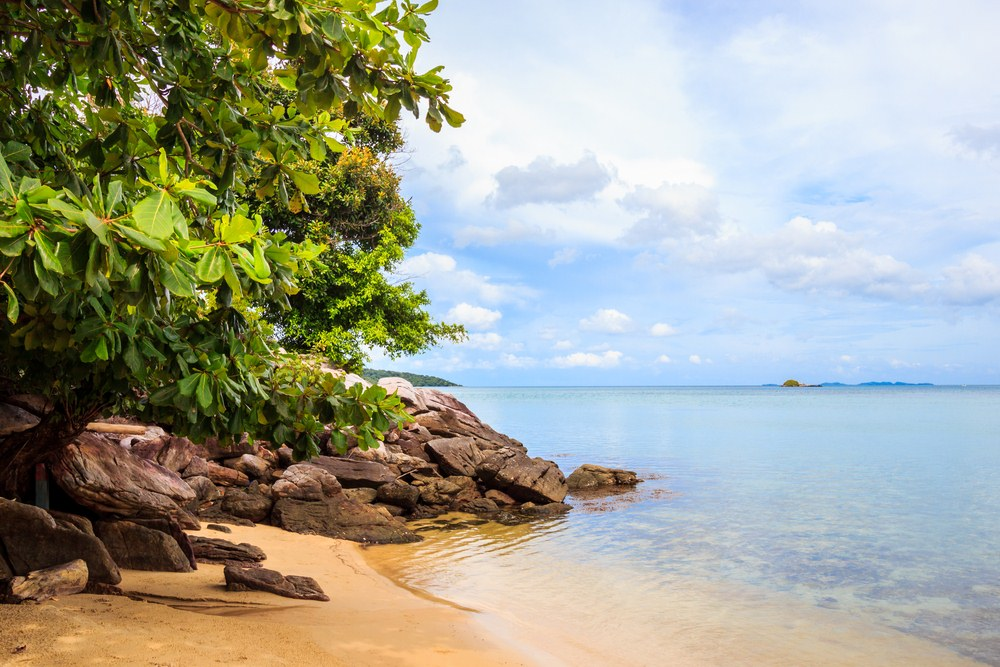

Karimunjawa
Karimunjawa merupakan primadona pariwisata dari Kabupaten Jepara. Tempat ini berupa kepulauan yang terletak di Laut Jawa dan telah dikembangkan menjadi pesona wisata taman laut. Jaraknya kurang lebih sekitar 83 km dari barat laut Kabupaten Jepara. Untuk dapat mencapai tempat ini, pelancong dapat memanfaatkan transportasi alternatif yang tersedia, seperti kapal feri yang berangkat dari Semarang; Jepara; atau Kendal.
Pesona Karimunjawa sendiri terletak pada keindahan bawah lautnya. Kekayaan biota laut yang ada terdiri dari 90 jenis karang keras, lebih dari 200 ikan hias, dan 130-an genera atau marga akuatik. Biota laut yang ada di Karimunjawa ini juga dilindungi demi menjaga kelangsungan ekosistem yang ada.
Atraksi menarik lainnya yang dapat dilakukan di tempat ini adalah menyelam, berenang, bermain di pantai, hingga berjemur. Anda juga bisa menyaksikan atraksi budaya yang disajikan oleh para penduduk lokal.